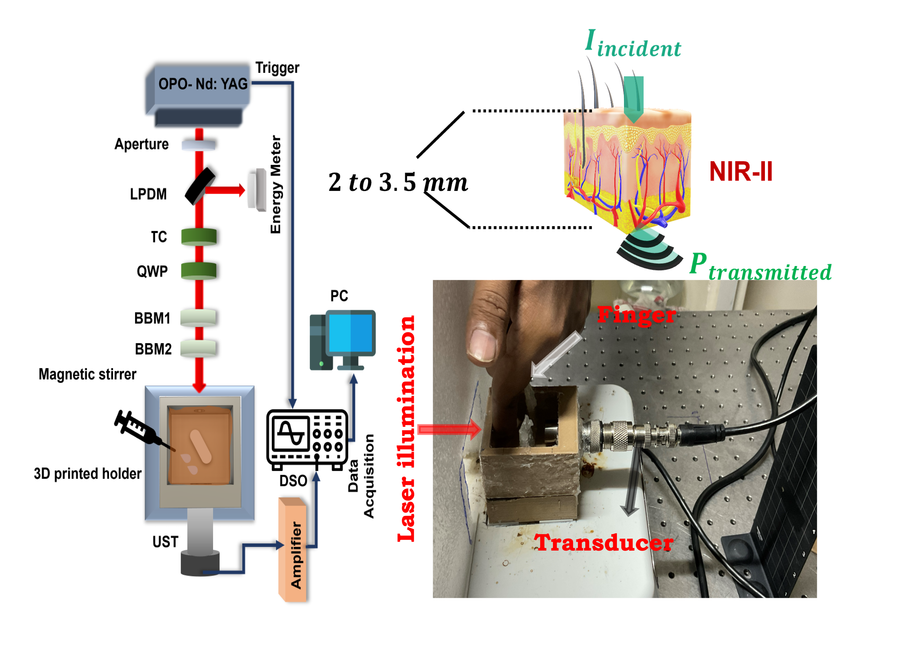

Polarisation Enhanced Photoacoustic Sensing
We explored how the polarisation of light can provide additional information about biological molecules, and how this information can be used for sensing at depth.
Deep-tissue sensing
Non-invasive Glucose Monitoring
Optical Rotation
- Investigating applications in non-invasive sensing glucose monitoring and biomedical diagnostics.
- Observed optical phenonmneon (optical rotation or optical activity) at different depths from acoustics.